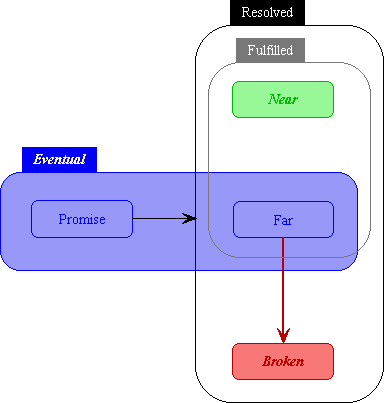
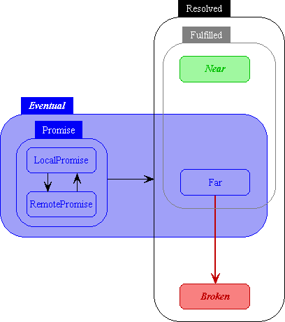
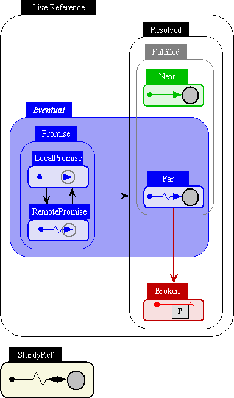

| |
Reference |
||||||
This page explains the different kinds of references for purposes of accurately understanding message delivery and partial failure. For orientation it also provides introductory explanations of how these distinctions affect reference equality. Briefly, if a reference is Settled, it supports The E language's "==" construct and may be used as a key in E's hashtables. Once you have this page under your belt, if you want more information of reference equality and Settled vs Unsettled, proceed to When are two references the same?.
Horizontal Taxonomy
All references are either Sturdy or Live. The following diagrams illustrate the possible transitions between the states of a Live reference.
The most important distinction is that a live reference is either Near, Eventual, or Broken.

These Diagrams use David Harel's Statecharts notation, a generalization of state transition diagrams. In statecharts, rounded rectangles represent a state or set of states. Arrows between rounded rectangles represent possible state transitions from any of the states in the from-set to any of the states in the to-set. So the arrow from Promise to Resolved means that a Promise may become Near, Far, or Broken. Separately, A Far reference may become Broken.
-
A Near reference is the one familiar from single machine object programming languages. It is a reference arrow in which both head and tail are in the same Vat, and the arrowhead is attached to the object being designated. Being Near is a final state: once a reference is Near, it is forever Near. Therefore, Near references are not susceptible to partition. Near references support both immediate calls and eventual sends. Immediate calls are guaranteed to reach their recipient. Eventually sent messages are guaranteed to be delivered according to the partial-order, except across a checkpoint/revival.
-
An Eventual reference is strictly weaker than a Near reference. It only supports eventual sends, with only a fail-stop guarantee, rather than guaranteed delivery. Fail-stop means that, should it ever come to designate an object, it will deliver messages to that object according to the partial-order until it fails. Once it fails, it will never again deliver any messages, and it will eventually become Broken.
-
A Broken reference is strictly weaker than Eventual or Near references. It does not and never will designate an object. Instead, it holds a Throwable to indicate what problem caused it not to designate an object. It does not support immediate calls -- if one is attempted it throws its problem. It does not support eventual sends -- if one is attempted, the result is a reference broken by this same problem. Like Near, Broken is a terminal state (once Broken always Broken). Broken references are transitively immutable and are transitively passed by copy.
Vertical Taxonomy
A reference is either a Promise or Resolved.
-
A Promise is not (yet) locally known to designate an object. Messages sent to an Promise are queued, awaiting the Promise's resolution. Should the Promise become fulfilled, whether to a Near or Far reference, these messages will be delivered to that object. The result of an eventual-send always starts as a Promise for the outcome. Promises are Unsettled.
-
It is locally known whether a Resolved reference designates an object or not, and if so, which object it designates. When the result of an eventual send becomes Resolved, we know that the request has completed, and that the reference now designates its outcome. Promises can become Resolved, but once Resolved always Resolved.
-
A Resolved reference that isn't Broken is Fulfilled -- it is known which object it designates, and it will convey messages to this object. If the result of an eventual send becomes Fulfilled, we know the request succeeded. Whereas if the result becomes Broken, either
-
the request reported an exceptional outcome (either by throwing, or by returning a Broken reference), or
-
a network partition prevented the request from arriving, or
-
a network partition prevented the answer from coming back.
In the latter two cases, the reference the message was sent on has failed, and will become Broken as well.
-
-
A Resolved Eventual reference is a Far reference. A Far reference is locally known to designate a PassByProxy object in a remote vat. Messages sent on a Far reference will eventually reach that object, unless the Far reference fails because of a network partition (communications failure or vat crash) in the meantime. The Far reference is Settled, and has the identity of the remote object it designates.
-
Detailed Taxonomy
There are two kinds of Promises: The LocalPromise and the RemotePromise. These further distinctions are mostly of interest to the theoretician or E implementor, and will not normally be of concern to the E programmer. For most programming purposes, all Promises can be treated alike.
The result of an eventual-send always starts out as a Promise, either a LocalPromise or a RemotePromise depending on whether the message was sent intra- or inter-vat. A LocalPromise is a promise for which the Resolver is in the same vat. A RemotePromise, like a Far reference, crosses vat boundaries.

-
A LocalPromise is a reference that is locally known to not yet designate any object (as opposed to a RemotePromise, which is not yet locally known to designate any object). A LocalPromise is a reference arrow in which both tail (Ref) and head (Resolver) are in the same vat, but the head isn't yet pointing at anything. A LocalPromise is paired with a corresponding Resolver, which is used to attach the arrow head to some target object. Since it can be attached to anything, a LocalPromise can transition to any of the other states. An eventual-send on an intra-vat reference will return a LocalPromise as a Promise for the result. A LocalPromise can also be created explicitly by using Ref.promise().
-
A RemotePromise is a Remote reference for which the identity and location of the object to which messages are to be delivered isn't yet locally known, and in which the tail and head of the reference arrow are not both in the same vat. The RemotePromise nevertheless sends messages towards its arrow head in the hope that they can be delivered as soon as it is determined who the lucky object is. An eventual send on a RemotePromise will return a RemotePromise as a promise for the result. Also, when a LocalPromise is passed over the network, the receiving vat receives a RemotePromise remotely designating the original LocalPromise.
Expanded Reference Taxonomy
So, mixing graphical notations, here is the expanded reference taxonomy:

Rounded rectangles and the arrows between them, none of whom begin with a dot, are to be interpreted according to statechart notation as above. Within the leaf rounded rectangles (those that do not contain further rounded rectangles) the arrows shown, all of whom begin with dots, represent references using our extended Granovetter notation.
A line without a squiggle is wholly contained within a single vat. A line with a squiggle (Remote) isn't, or in the case of a SturdyRef, may not be.
A triangular arrowhead is a reference messages can be sent on. These messages move towards the arrowhead, in the hopes of eventually being delivered.
A gray halo around an arrowhead (Promise) means that, although the arrowhead is not yet attached to an object, and therefore the arrow does not yet point at an object, the arrowhead itself is reified as a Resolver object, which can be used to determine whether and what the arrow should point at.
A gray circle attached to an arrowhead is the object the reference points at. Elsewhere, we use cirle vs rectangle to distinguish whether the pointed-to object is PassByProxy (circle) or PassByConstruction (rectangle). (The common case of PassByConstruction is PassByCopy.)
A slash as arrowhead (Broken) indicates that the reference will never point at anything. This always goes with a box on the side which is the problem-object (a Throwable presumably explaining why not). While messages may still be sent on this reference, they will always simply report this problem and be discarded. If a gray circle is shown after the slash, it represents the object the reference used to point at before it broke, in which case it retains this identity for equality testing purposes.
A diamond as arrowhead (SturdyRef) is "forever". This is the only kind of reference to survive a network partition, and so is the means by which connectivity is preserved and consistency recovered across such traumas. The price of survival is that a SturdyRef cannot directly accept messages, since it cannot guarantee fail-stop delivery: See Handling Partial Failure.
Distributed Equality
In order to reason about distributed reference equality, yet further distinctions are needed. See Equality and in particular When are two references the same?.
Unless stated otherwise, all text on this page which is either unattributed or by Mark S. Miller is hereby placed in the public domain.
| |
|
report bug (including invalid html)
|
||||||||